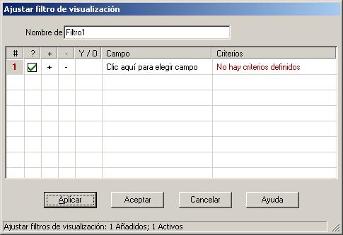

Un "filtro" es un criterio (o conjunto de criterios) con que una entrada coincide o no. PasswordSafe te permite definir filtros, y mostrar sólo aquellas entradas que coincidan con un filtro dado. Puedes definir un filtro para consultar una sola vez, o puedes definir varios filtros, nombrarlos y almacenarlos, por usarlos reiteradamente. Los filtros pueden almacenarse junto con la base de datos, o externamente, para compartir el mismo filtro a través de varias bases de datos.
Definir un filtro
Para definir un nuevo filtro, selecciona el menú Ver->Filtros->Nuevo/Editar Filtro. Se mostrará el siguiente cuadro de diálogo:
Como puedes ver, cada filtro está compuesto de una o más filas, donde cada fila define un criterio sobre un campo determinado. Las condiciones definidas en cada fila puede ser enlazadas con "y" u "o" con las condiciones definidas en la fila anterior. Esto te permite definir los siguientes tipos de filtros:
1. Todas las entradas cuyo usuario contiene "jose" or "José" or "JOSÉ"

2. Todas las entradas con usuario "José" (exactamente) creado tras el 5 de mayo de 2010

3. Todas la entradas cuyo usuario contenga "José" or "María"

Como puedes ver, los filtrol pueden tener cualquier complejidad.
Las columnas de la tabla filtro son las siguientes:
- '#' - Este es el número de fila. Se muestra por conveniencia y no se puede modificar.
- '?' - La casilla de verificación en esta columna determina si la fila está activa o no. Sólo se usan las filas activas al aplicar el filtro. Hacer click en la casilla activa/desactiva la fila.
- '+' - Clic para insertar una nueva fila por debajo de una fila determinada.
- '-' - Click para eliminar la fila actual. Nota: Puesto que borrar una fila es permanente, es posible que desees deshabilitarlo.
- 'Y/O' - Esto te permite determinar la relación de la regla que está añadiendo con la regla anterior.
- 'Campo' - Selecciona el campo de la entrada que te interesa, usuario, grupo, notas, etc.
- 'Criterio' - Define el valor que le interesa para el campos seleccionado. Una vez hayas seleccionado un campo, al hacer clic en este abrirá un cuadro de diálogo que permite especificar los criterios, que se muestran en la tabla.